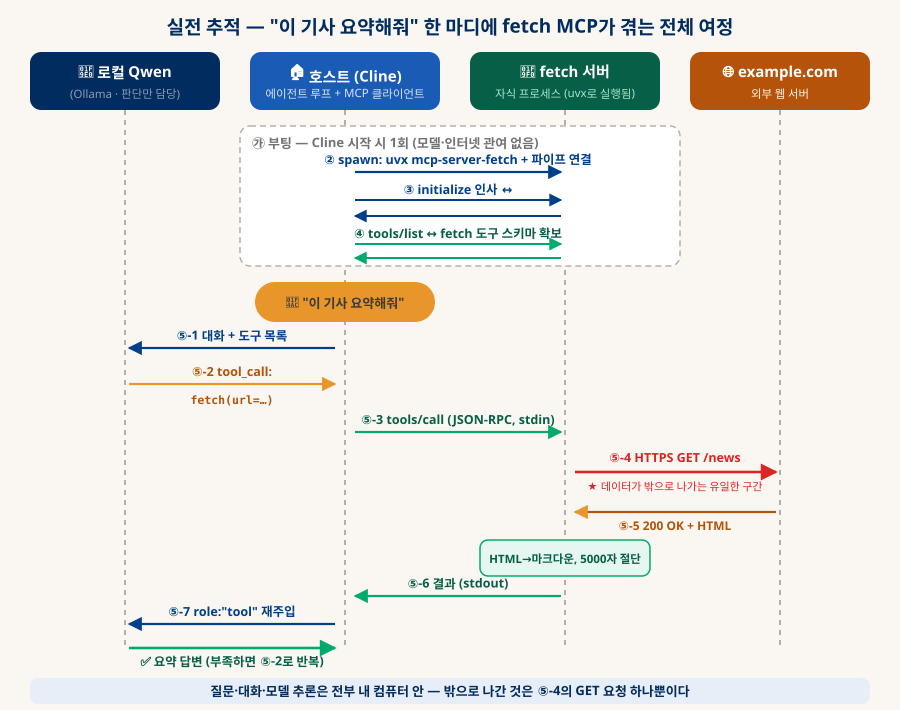
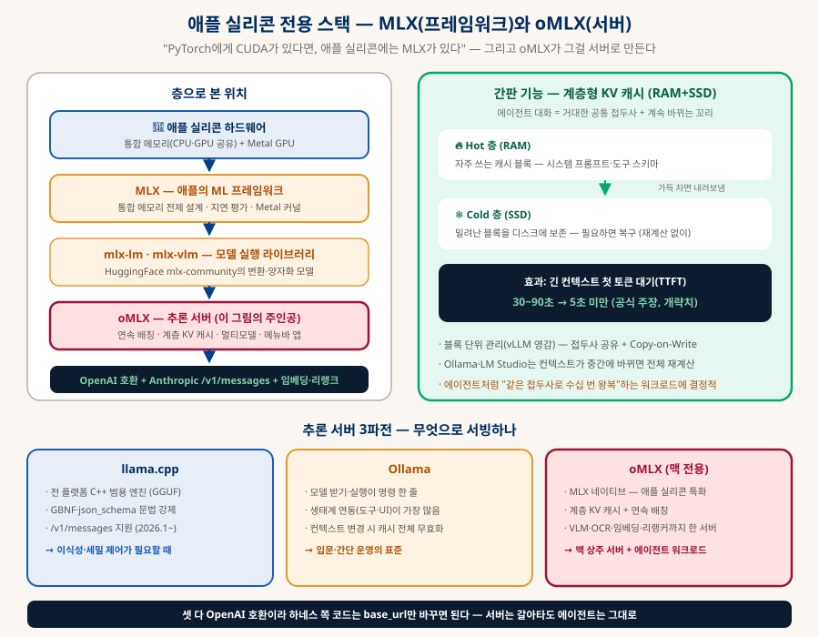

로컬 LLM 에이전트
도구 호출 · MCP · RAG로 날개 달기
클라우드 LLM 서비스의 "수많은 기능"은 모델이 아니라 모델을 감싼 실행 루프에 있다. 내 컴퓨터의 Qwen3에게 웹 읽기·검색·파일·브라우저·내 문서 지식까지 부여하는 방법을 — 원리(도구 호출)부터 직접 구현(파이썬 루프), 그리고 생태계 활용(MCP)까지 단계별로 정리한다.
0. 한눈에 보기 — 기능은 모델이 아니라 하네스에 있다
이 한 문장을 이해하면 로컬 재현의 길이 전부 열린다
ChatGPT가 웹을 검색하고 Claude가 파일을 만들 때, 모델 자체는 아무것도 실행하지 않는다. 모델은 "web_search를 이런 인자로 호출하고 싶다"는 구조화된 텍스트를 출력할 뿐이고, 그 텍스트를 읽고 실제로 검색을 실행한 뒤 결과를 다시 모델에게 먹여주는 것은 모델 바깥의 프로그램 — 하네스(harness)다. 클라우드 서비스란 "좋은 모델 + 잘 만든 하네스 + 도구 묶음"이고, 이 셋 중 모델만 로컬로 바꾸면 나머지는 전부 내 컴퓨터에서 재조립할 수 있다.
있는 도구의 수
최소 구현 (§2)
MCP 도구 서버 (§3)
남는 비율 (로컬의 특권)
1. 도구 호출의 원리 — 모델과 하네스의 계약
"실행하고 싶다"고 말하는 모델, 실제로 실행하는 내 코드

동작 순서는 이렇다. ① 하네스가 모델에게 대화 내용과 함께 도구 목록(JSON Schema)을 전달한다. ② 모델이 도구가 필요하다고 판단하면 일반 답변 대신 tool_call(도구 이름 + 인자)을 출력한다. ③ 하네스가 해당 함수를 실제로 실행하고 ④ 결과를 role: "tool" 메시지로 대화에 붙여 다시 모델에게 보낸다. 모델이 tool_call 없이 답하면 루프 종료. Qwen3를 포함한 최근 오픈 모델들은 이 형식으로 학습되어 있어서(네이티브 function calling), Ollama·LM Studio·vLLM이 제공하는 OpenAI 호환 API에 도구 목록만 넘기면 그대로 동작한다.
{ "type": "function", "function": { "name": "web_fetch", "description": "URL의 웹페이지를 가져와 본문 텍스트를 돌려준다", ← 모델은 이 설명을 보고 언제 쓸지 판단한다 "parameters": { "type": "object", "properties": { "url": { "type": "string", "description": "가져올 페이지 주소" } }, "required": ["url"] } } }
{ "role": "assistant", "tool_calls": [{ "id": "call_001", "function": { "name": "web_fetch", "arguments": "{\"url\": \"https://example.com/news\"}" } }] } // ③ 하네스가 web_fetch()를 실행한 뒤, 결과를 붙여 다시 모델에게: { "role": "tool", "tool_call_id": "call_001", "content": "오늘의 뉴스 본문…" }
2. 에이전트 루프 직접 만들기 — web_fetch 달린 Qwen3
원리를 한 번 손으로 만들어보면, 이후의 모든 도구는 "함수 하나 추가"일 뿐이다
준비물: ollama pull qwen3:30b-a3b (또는 LM Studio에서 모델 로드 후 서버 켜기), 그리고 pip install openai requests trafilatura. OpenAI SDK를 쓰지만 base_url만 로컬로 바꾸면 OpenAI 서버가 아니라 내 컴퓨터의 Qwen에게 간다 — 네트워크 문서(§4)에서 본 "같은 REST API, 다른 주소"다.
A도구 구현 — 진짜 일을 하는 평범한 파이썬 함수
import requests, trafilatura def web_fetch(url: str) -> str: """URL의 본문 텍스트를 추출해 돌려준다.""" html = requests.get(url, timeout=10, headers={"User-Agent": "Mozilla/5.0"}).text text = trafilatura.extract(html) # 광고·메뉴 제거, 본문만 return (text or "본문 추출 실패")[:4000] # ★ 결과는 잘라서 — 컨텍스트 보호 def web_search(query: str) -> str: """SearXNG(로컬 메타검색)으로 웹을 검색해 상위 결과를 돌려준다.""" r = requests.get("http://localhost:8080/search", params={"q": query, "format": "json"}, timeout=10).json() return "\n".join(f"{x['title']} — {x['url']}\n{x.get('content','')}" for x in r["results"][:5])
B루프 완성 — 이게 에이전트의 전부다
import json from openai import OpenAI from tools import web_fetch, web_search client = OpenAI(base_url="http://localhost:11434/v1", api_key="ollama") # ← Ollama TOOLS = [ # §1의 JSON Schema들 (web_fetch, web_search) {"type":"function","function":{"name":"web_fetch","description":"링크가 주어지거나 특정 페이지 내용이 필요할 때. 본문 텍스트 반환", "parameters":{"type":"object","properties":{"url":{"type":"string"}},"required":["url"]}}}, {"type":"function","function":{"name":"web_search","description":"최신 정보나 모르는 사실을 물을 때 웹 검색", "parameters":{"type":"object","properties":{"query":{"type":"string"}},"required":["query"]}}}, ] IMPL = {"web_fetch": web_fetch, "web_search": web_search} messages = [ {"role":"system", "content":"필요할 때만 도구를 사용하고, 결과를 근거로 한국어로 답하라."}, {"role":"user", "content":"오늘 발표된 Qwen 관련 소식 있어? 요약해줘"}, ] for _ in range(10): # ★ 무한 루프 방지 상한 r = client.chat.completions.create( model="qwen3:30b-a3b", messages=messages, tools=TOOLS) msg = r.choices[0].message messages.append(msg) if not msg.tool_calls: # 도구 요청 없음 = 최종 답변 print(msg.content); break for tc in msg.tool_calls: # 모델이 원한 도구를 대신 실행 try: out = IMPL[tc.function.name](**json.loads(tc.function.arguments)) except Exception as e: out = f"도구 오류: {e}" # ★ 오류도 모델에게 — 스스로 재시도한다 messages.append({"role":"tool", "tool_call_id": tc.id, "content": str(out)})
이 50줄이 클라우드 서비스 구조의 축소판이다. 실행하면: 모델이 web_search("Qwen 최신 소식")을 요청 → 하네스가 검색 실행 → 결과를 본 모델이 흥미로운 링크에 web_fetch 요청 → 본문을 읽고 요약 답변. 새 기능 추가 = 함수 하나 + 스키마 하나 + IMPL 등록 한 줄이다. 파일 읽기, 계산기, 우리 Knowledge DB 문서 검색… 무엇이든.
3. MCP — 도구를 만들지 않고 "수집"하는 표준
§2처럼 도구를 일일이 만들 필요가 없는 이유: 이미 만들어져 있고, 꽂기만 하면 된다
§2 방식의 한계는 명확하다 — 도구마다 함수와 스키마를 직접 짜야 하고, 내 루프에서만 쓸 수 있다. MCP(Model Context Protocol)는 이 문제를 푸는 개방 표준이다(2024년 Anthropic이 공개, 이후 업계 표준화). 도구를 MCP 서버라는 독립 프로그램으로 만들어두면, MCP를 지원하는 어떤 호스트든 — Cline, Open WebUI, LM Studio, 자작 루프 — 설정 몇 줄로 그 도구를 쓸 수 있다. 네트워크 문서에서 본 "표준이 생태계를 만든다"의 LLM판이다.

A로컬 MCP 서버의 실체 — "원격 서비스"가 아니라 자식 프로세스다
mcp.json의 "command": "npx", "args": [...]를 보고 "어딘가의 서버에 접속하나 보다"라고 생각하기 쉽지만, 실제로는 정반대다. 이 설정의 뜻은 "이 명령을 실행해서 프로그램을 내 컴퓨터에 자식 프로세스로 띄우고, 그 프로세스의 표준입출력(stdin/stdout)과 JSON으로 대화하라"이다. npx는 npm 패키지를 내려받아 실행하는 실행기일 뿐이고(uvx는 Python판), 띄워진 서버는 네트워크 소켓도, localhost 포트도 쓰지 않는다 — 운영체제의 파이프를 통한 순수 로컬 IPC(프로세스 간 통신)다. 전체 수명은 아래 6단계다:

파이프 위를 실제로 오가는 것은 JSON-RPC라는 요청-응답 형식이다. 네트워크 문서의 REST와 비유하면 — "HTTP 대신 파이프를 쓰는 API"인 셈:
# ③ 인사: 프로토콜 버전과 능력 교환 → {"jsonrpc":"2.0", "method":"initialize", "params":{"protocolVersion":"2025-06-18", ...}} ← {"result":{"capabilities":{"tools":{}}, "serverInfo":{"name":"filesystem"}}} # ④ 도구 목록 수집 — §1의 "도구 스키마"가 여기서 온다 → {"method":"tools/list"} ← {"result":{"tools":[{"name":"read_file", "inputSchema":{"properties":{"path":...}}}, ...]}} # ⑤ 모델이 tool_call을 출력할 때마다 — 호스트가 중계 → {"method":"tools/call", "params":{"name":"read_file", "arguments":{"path":"README.md"}}} ← {"result":{"content":[{"type":"text", "text":"# KnowledgeDB App…"}]}}
B따라가 보기 — "이 기사 요약해줘" 한 마디의 전체 여정
A의 6단계를 실제 서버 하나로 끝까지 추적해 보자. 설정에 "fetch": { "command": "uvx", "args": ["mcp-server-fetch"] }를 등록해 두고, Cline에게 "이 기사 요약해줘: https://example.com/news"라고 입력하는 상황이다. 등장인물은 넷 — 판단하는 모델(Qwen), 중계하는 호스트(Cline), 실행하는 fetch 서버, 그리고 외부의 웹 서버:

| 단계 | 구간 | 일어나는 일 |
|---|---|---|
| ② spawn | 호스트 → OS | uvx가 mcp-server-fetch 패키지를 캐시에 받고 파이썬 자식 프로세스로 실행. stdin/stdout 파이프 자동 연결. 서버는 stdin을 읽으며 대기할 뿐 아무 일도 하지 않는다 (ps로 보면 Cline 아래 매달린 python 프로세스). |
| ③ initialize | 호스트 ↔ 서버 | 프로토콜 버전·능력 교환. fetch 서버는 "capabilities": {"tools": {}} — "나는 도구 제공 서버"라고 선언. TLS 핸드셰이크처럼 "본론 전 조건 합의". |
| ④ tools/list | 호스트 ↔ 서버 | 서버가 도구 fetch 하나를 스키마와 함께 반환 — 인자는 url(필수), max_length(기본 5000), start_index(이어 읽기), raw. 호스트가 이를 모델용 도구 목록에 합류시킨다. 여기까지가 세션당 1회. |
| ⑤-1·2 판단 | 호스트 ↔ 모델 | 대화+도구 목록을 받은 Qwen이 답변 대신 fetch(url="https://example.com/news") tool_call을 출력. 모델이 한 일은 이 JSON 텍스트 생성뿐. |
| ⑤-3 중계 | 호스트 → 서버 | 호스트가 tool_call을 tools/call JSON-RPC로 번역해 파이프(stdin)에 쓴다. |
| ⑤-4·5 실행 | 서버 → 인터넷 | 데이터가 컴퓨터 밖으로 나가는 유일한 구간. fetch 서버가 example.com에 실제 HTTPS 요청 — 네트워크 문서 그대로 DNS 조회 → TCP+TLS → GET → 200+HTML 수신. |
| ⑤-5′ 가공 | 서버 내부 | HTML에서 메뉴·광고를 걷어내고 마크다운으로 변환, max_length(5000자)에서 절단 — §2에서 직접 구현했던 "결과 절단"을 서버가 대신해 준다. |
| ⑤-6·7 회신 | 서버 → 호스트 → 모델 | 결과가 stdout → 호스트가 role: "tool" 메시지로 대화에 붙여 다시 Qwen에게. 내용이 잘렸으면 모델이 start_index=5000으로 재호출(⑤ 반복), 충분하면 요약을 출력하며 종료. |
CCline에 도구 꽂기 — 이미 쓰고 있는 호스트부터
Cline은 MCP 호스트라서, 설정에 서버를 등록하면 로컬 Qwen이 그 도구들을 바로 쓴다. Cline의 MCP 설정(마켓플레이스 또는 cline_mcp_settings.json)에 이렇게 추가하면:
{ "mcpServers": { "filesystem": { // 파일 읽기·쓰기·검색 (지정 폴더만 허용 ← 보안) "command": "npx", "args": ["-y", "@modelcontextprotocol/server-filesystem", "/Users/leester/Desktop/Dev"] }, "fetch": { // 웹페이지 가져오기 — §2의 web_fetch를 만들 필요가 없어진다 "command": "uvx", "args": ["mcp-server-fetch"] }, "playwright": { // 진짜 브라우저 조작 — 클릭·입력·스크린샷 "command": "npx", "args": ["-y", "@playwright/mcp@latest"] } } }
| MCP 서버 | 부여되는 능력 | 활용 예 |
|---|---|---|
| filesystem | 파일 읽기·쓰기·검색 | "Dev 폴더에서 TODO 주석 전부 찾아줘" |
| fetch | 웹페이지 → 마크다운 | "이 링크 기사 요약해줘" |
| playwright | 브라우저 조작·스크린샷 | "이 사이트 로그인 과정이 되는지 확인해줘" |
| github | 이슈·PR·저장소 조회/생성 | "knowledge-db 저장소 최근 커밋 보여줘" |
| sqlite / postgres | DB 스키마 조회·질의 | "주문 테이블에서 이번 달 합계 뽑아줘" |
| memory | 대화 간 지식 저장 | "내 프로젝트 규칙 기억해둬" → 다음 세션에도 유지 |
D자작 MCP 서버 — 내 도구도 표준 플러그로
직접 만든 도구도 MCP 서버로 포장하면 모든 호스트에서 재사용된다. 파이썬 FastMCP로는 데코레이터 하나면 끝 — 예를 들어 이 Knowledge DB를 검색하는 도구:
from fastmcp import FastMCP from pathlib import Path import re, json mcp = FastMCP("knowledge-db") ROOT = Path.home() / "Desktop/Dev/knowledge-db" @mcp.tool() def list_docs() -> str: """Knowledge DB의 문서 목록(제목·태그)을 돌려준다.""" d = json.loads((ROOT / "docs.json").read_text()) return "\n".join(f"{x['id']}: {x['title']} {x['tags']}" for x in d["docs"]) @mcp.tool() def search_docs(keyword: str) -> str: """문서 본문에서 키워드가 나오는 부분을 찾아 전후 문맥과 함께 돌려준다.""" hits = [] for f in (ROOT / "docs").glob("*.html"): text = re.sub(r"<[^>]+>", " ", f.read_text()) # 태그 제거 for m in re.finditer(re.escape(keyword), text): hits.append(f"[{f.stem}] …{text[max(0,m.start()-80):m.end()+80]}…") return "\n\n".join(hits[:10]) or "검색 결과 없음" if __name__ == "__main__": mcp.run() # 호스트 설정에 {"command":"python","args":["my_kdb_server.py"]} 등록
E소스코드로 직접 실행하기 — npx가 하는 일을 내 손으로
A에서 봤듯 npx는 "다운로드 후 실행"을 대신해줄 뿐이므로, 소스를 직접 받아 실행해도 완전히 동일하게 동작한다. 공식 서버 모음(github.com/modelcontextprotocol/servers)을 예로 들면:
git clone https://github.com/modelcontextprotocol/servers.git cd servers/src/filesystem npm install && npm run build # → dist/index.js 생성. Python 서버라면 이 단계 없이 uv run
{ "mcpServers": { "filesystem": { "command": "node", "args": ["/Users/leester/Desktop/Dev/servers/src/filesystem/dist/index.js", "/Users/leester/Desktop/Dev"] } } } // Python 서버라면: {"command": "python", "args": ["server.py"]} 또는 uv run — // D(자작 서버)의 등록 방식과 완전히 같다. 자작이든 클론이든 "소스로 도는 로컬 서버"일 뿐.
소스 실행이 주는 것 세 가지: ① 커스터마이징 — 코드를 열어 도구를 추가·수정할 수 있다 (예: filesystem 서버에 "읽기 전용 모드" 강제). ② 감사(audit) — 도구 = 권한(§7)이므로, 실행 전에 이 코드가 무엇을 하는지 직접 확인할 수 있다. ③ 고정 — npx가 매번 버전을 확인하는 지연이 없고, 검증한 버전이 몰래 바뀌지 않는다.
F경계선 두 가지 — "로컬"이라는 말의 함정
여기까지 읽으면 "MCP 서버 = 전부 내 컴퓨터"로 느껴지지만, 두 가지 경계는 구분해야 한다. 첫째, 서버가 로컬이라고 통신까지 로컬인 것은 아니다 — 서버가 "무엇을 감싸는가"에 따라 데이터가 밖으로 나갈 수 있다. 둘째, 애초에 내 컴퓨터에서 실행되지 않는 원격 호스팅형 MCP도 존재한다:
| 유형 | 서버 | 하는 일 |
|---|---|---|
| 완전 로컬형 비행기 모드에서도 동작 프라이버시의 이상형 |
filesystem | 지정 폴더의 파일 읽기·쓰기·검색·이동. 가장 기본이 되는 서버. |
| sqlite | 로컬 SQLite 파일에 SQL 질의, 스키마 탐색 — "내 데이터에게 질문하기". | |
| git | 로컬 저장소의 log·diff·상태 조회와 커밋 (push 전까지는 완전 로컬 — git 문서 §1 그대로). | |
| memory | 대화에서 배운 사실을 지식 그래프로 저장 — 세션이 끝나도 기억 유지. | |
| time | 시간대 변환·날짜 계산. LLM이 유난히 약한 영역을 정확한 계산으로 보완. | |
| sequential-thinking | 복잡한 문제를 단계별 사고로 풀도록 돕는 사고 보조 도구 (외부 자원 접근 없음). | |
| 로컬 실행 + 외부 API형 프로세스는 로컬, 일은 외부 호출 (키 필요) |
fetch | 웹페이지를 가져와 마크다운으로 변환 (3-B에서 추적한 그 서버). |
| brave-search · tavily | 웹 검색 — 질의가 검색 서비스로 나간다. API 키 필요 (완전 로컬을 원하면 SearXNG). | |
| github | 이슈·PR·저장소 조회와 생성. GitHub API 호출이라 PAT 토큰 필요. | |
| slack | 채널 메시지 읽기·전송 — 팀 커뮤니케이션을 에이전트가 대신. | |
| notion | Notion 페이지·데이터베이스 조회와 편집. | |
| google-maps | 장소 검색·경로·거리 계산. | |
| 경계 사례 "무엇에 연결하느냐"가 유형을 결정 |
playwright | 브라우저 자동화 — 프로세스·브라우저는 로컬이지만, 방문하는 사이트로는 당연히 나간다. |
| postgres | 연결 문자열이 localhost면 완전 로컬, 클라우드 DB면 외부 통신 — 설정이 유형을 가른다. | |
| 원격 호스팅형 "url"로 등록 · 설치 불필요 OAuth 로그인 · 감사 불가 |
GitHub (원격판) | 같은 GitHub 기능을 서버 설치 없이 — SaaS가 호스팅하고 OAuth로 로그인. |
| Linear | 이슈 트래커 조회·생성 — 개발 팀의 작업 관리를 에이전트로. | |
| Sentry | 서비스 에러·스택트레이스 조회 — "어젯밤 왜 터졌어?"를 대화로. | |
| Atlassian | Jira 이슈·Confluence 문서 접근. | |
| Cloudflare | DNS·Workers 등 인프라 설정을 대화로 관리. |
원격 호스팅형은 서버 자체가 남의 컴퓨터에서 돈다(HTTP 방식). 설치·업데이트가 필요 없고 항상 최신이라는 장점이 있지만, 인터넷이 필수이고 소스가 비공개면 코드 감사가 불가능하다 — 공개돼 있다면 클론해서 E 방식으로 로컬화할 수 있다.
4. 기능별 레시피 — 클라우드 기능의 로컬 대체재
"그 서비스의 그 기능"을 어떤 조합으로 재현하는지 지도 한 장으로
| 클라우드 기능 | 로컬 조합 | 비고 |
|---|---|---|
| 웹 페이지 읽기 | mcp-server-fetch 또는 §2 web_fetch | 가장 쉬운 첫 도구. 본문 추출은 trafilatura가 잘한다 |
| 웹 검색 | SearXNG(로컬 메타검색, Docker 1줄) + fetch | API 키 없이 완전 로컬. 상용 품질이 필요하면 Brave/Tavily API |
| 내 문서 지식 (RAG) | 임베딩 모델 + 벡터 DB (아래 4-1) | Open WebUI는 문서 업로드 RAG가 내장 — 가장 빠른 시작 |
| 코드 실행 | Docker 샌드박스에서 Python 실행 도구 | ⚠ 반드시 격리 — 모델이 짠 코드를 호스트에서 그대로 실행하지 말 것 |
| 브라우저 자동화 | @playwright/mcp | 로그인·클릭·스크린샷까지. "보는 눈"이 필요하면 VL 모델과 조합 |
| 이미지 이해 | 비전 모델로 교체 (Qwen-VL 계열) | 도구가 아니라 모델 교체 사안. 스크린샷 → 분석 조합에 유용 |
| 장기 기억 | memory MCP 서버 또는 파일 기반 노트 도구 | "기억해둬"를 파일로 저장 → 시스템 프롬프트에 로드 |
| 에이전트 코딩 | Cline + 로컬 엔드포인트 (이미 사용 중) | Qwen3-Coder 계열이 코딩 특화라 체감이 더 좋다 |
ARAG — "내 문서를 아는" 기능의 정체
가장 오해가 많은 기능이라 따로 해부한다. RAG(Retrieval-Augmented Generation)는 모델을 내 문서로 재학습시키는 게 아니다 — 답변 직전에 관련 문단을 검색해서 프롬프트에 끼워 넣어줄 뿐이다. 핵심 부품은 두 개: 텍스트를 "의미 좌표"로 바꾸는 임베딩 모델(bge-m3, Qwen3-Embedding 등 — Ollama로 로컬 실행 가능)과, 그 좌표들을 저장하고 유사도 검색하는 벡터 DB(Chroma·Qdrant, DB 문서 §4의 pgvector도 여기).

5. 전체 스택 조립 — 내 컴퓨터 안의 미니 클라우드
추론 서버 하나를 여러 하네스가 나눠 쓰고, 도구층은 MCP로 공유한다

구축 순서 추천 (각 단계마다 동작 확인 후 다음으로):
| 단계 | 할 일 | 확인 방법 |
|---|---|---|
| 1일차 | Ollama(또는 LM Studio, 맥이면 oMLX — §6)로 Qwen3-30B-A3B 서빙 | curl localhost:11434/v1/models가 응답하면 성공 |
| 2일차 | Open WebUI 연결 (Docker 1줄) | 브라우저 챗에서 대화 + 문서 업로드 RAG 확인 |
| 3일차 | §2 루프를 한 번 직접 실행 | web_fetch로 실제 페이지 요약이 되는지 — 원리 체득 |
| 4일차 | Cline·Open WebUI에 MCP 서버 등록 (fetch·filesystem부터) | "이 링크 요약해줘", "이 폴더에서 찾아줘"가 되는지 |
| 이후 | 필요할 때마다 서버 추가 + 자작 MCP 서버(§3-B) | 도구가 늘 때마다 §7의 수칙 점검 |
6. 애플 실리콘 특화 스택 — MLX와 oMLX 해부
맥이 로컬 LLM의 기본 하드웨어가 되면서, 애플 전용 스택이 따로 성숙했다
§5까지의 스택(Ollama·llama.cpp)은 모든 플랫폼에서 통하는 범용 조립이다. 그런데 맥미니가 "개인 AI 서버"의 표준 기기가 된 흐름(「상주형 AI 에이전트」 §8) 속에서, 애플 실리콘에서만 도는 대신 그 하드웨어를 한계까지 쓰는 전용 스택이 따로 자랐다 — 프레임워크 층의 MLX와, 그것을 서버로 만드는 oMLX다.

AMLX — 애플이 직접 만든 ML 프레임워크
MLX는 애플 ML 연구팀이 2023년 말 공개한 오픈소스 배열 연산 프레임워크다. 한 줄 요약은 "PyTorch에게 CUDA가 있다면, 애플 실리콘에는 MLX가 있다" — NumPy를 닮은 API로, 애플 칩에서 ML을 돌리는 것 하나만을 위해 설계됐다. 빠른 이유는 세 가지 설계 선택에서 나온다:
🧠 통합 메모리 네이티브
대부분의 프레임워크는 "CPU 메모리에서 GPU 메모리로 데이터를 복사한다"는 CUDA 세계관으로 설계됐다. MLX는 처음부터 "메모리는 하나"라는 애플 실리콘의 전제로 설계돼, CPU↔GPU 간 복사 자체가 없다.
⏳ 지연 평가 (lazy evaluation)
연산을 즉시 실행하지 않고 그래프로 모았다가 결과가 필요한 순간 한꺼번에 실행한다 — 불필요한 중간 계산을 건너뛰고 커널을 융합할 기회가 생긴다.
⚙️ Metal 커널 최적화
애플 GPU(Metal) 전용 커널로 연산을 실행한다. 신형 칩(M4 등)의 새 기능을 가장 먼저 활용하는 쪽도 대체로 MLX다 — 애플이 직접 만들기 때문.
실전에서 만나는 모습은 mlx-lm(LLM 추론·양자화·간단 파인튜닝)과 mlx-vlm(비전 모델) 라이브러리, 그리고 HuggingFace의 mlx-community에 올라오는 변환·양자화 모델들이다. 주의할 점 하나 — MLX는 llama.cpp의 GGUF와 다른 모델 포맷을 쓴다 (safetensors 기반). 같은 Qwen이라도 "GGUF판"과 "MLX판"을 구분해서 받아야 한다.
BoMLX 해부 — MLX를 "서버"로 만드는 마지막 조각
oMLX는 mlx-lm 위에 서버 기능을 얹은 애플 실리콘 전용 추론 서버다 (Apache 2.0, 스타 1.8만+ 개략치, macOS 15+ · M1 이상, brew 또는 .dmg로 설치). Electron이 아닌 네이티브 Swift 메뉴바 앱이 딸려 있어 서버 시작·중지·모델 다운로드를 터미널 없이 관리할 수 있고, 크래시 시 자동 재시작까지 해준다 — "켜두고 잊는" 상주 서버로 설계된 물건이다. 뜯어볼 기능은 다섯 가지다.
① 계층형 KV 캐시 (간판 기능). 에이전트 대화의 구조를 떠올려 보자 — 거대한 공통 접두사(시스템 프롬프트 + 도구 스키마 수천 토큰) + 매번 바뀌는 꼬리가 수십 번 왕복한다. Ollama·LM Studio는 컨텍스트가 중간에 바뀌면 KV 캐시 전체를 버리고 처음부터 재계산한다. oMLX는 캐시를 블록 단위(vLLM에서 영감)로 관리하며 접두사 공유와 Copy-on-Write를 지원하고, RAM(Hot)이 차면 블록을 SSD(Cold, safetensors 포맷)로 내려보냈다가 필요하면 복구한다. 효과는 긴 컨텍스트의 첫 토큰 대기(TTFT)가 30~90초 → 5초 미만(공식 주장, 개략치)으로 주는 것 — 「Claude Code 내부 해부」에서 본 "캐시 정렬" 원칙이 서버 쪽에서 구현된 셈이다.
② 연속 배칭(continuous batching). 동시 요청을 기본 8개(조정 가능)까지 겹쳐 처리한다. 단일 대화에는 큰 의미가 없지만, 에이전트의 병렬 도구 호출·서브에이전트, 또는 가족·팀이 서버 하나를 나눠 쓰는 구성에서 체감 차이가 크다.
③ 멀티모델 서빙과 메모리 가드. 여러 모델을 등록해두면 LRU로 자동 교체하고, 자주 쓰는 모델은 핀 고정, 유휴 모델은 TTL로 내린다. 전체 메모리 상한(--memory-guard-gb, 기본 "시스템 RAM − 8GB")을 걸어 시스템 전체가 스와프로 죽는 사고를 막는다 — 상주 서버에서 특히 중요한 안전장치다.
④ 모델 스펙트럼 — RAG 스택이 서버 하나로. LLM만이 아니라 VLM(이미지 이해), OCR, 임베딩(BGE-M3 등)과 리랭커까지 서빙한다. §4-1의 RAG 레시피에서 따로 세우던 임베딩 서버가 필요 없어진다는 뜻 — /v1/embeddings·/v1/rerank 엔드포인트를 같은 서버가 제공한다.
⑤ API 호환 — Anthropic 방언까지. OpenAI 호환(/v1/chat/completions)에 더해 Anthropic Messages API(/v1/messages)를 네이티브로 제공한다. 「Claude Code 내부 해부」 §11에서 다룬 "두 방언" 문제가 여기서도 해소된다 — Anthropic 방언을 쓰는 하네스(Claude Code 등)를 변환 프록시 없이 바로 꽂을 수 있다. MCP 도구 통합도 서버 수준에서 지원한다.
# 설치 (Homebrew) — 또는 공식 .dmg로 메뉴바 앱 설치 brew tap jundot/omlx https://github.com/jundot/omlx brew install omlx # 서빙 — SSD 캐시와 메모리 상한을 걸고 (기본 포트 8000) omlx serve --model-dir ~/models \ --max-concurrent-requests 8 \ --paged-ssd-cache-dir ~/.omlx/cache \ ← 계층형 캐시 활성화 --memory-guard-gb 24 ← 시스템 보호 (32GB 맥 기준) # §2의 에이전트 루프는 base_url만 바꾸면 그대로 동작 client = OpenAI(base_url="http://localhost:8000/v1", api_key="omlx")
C추론 서버 3파전 — llama.cpp vs Ollama vs oMLX
| llama.cpp | Ollama | oMLX | |
|---|---|---|---|
| 플랫폼 | 전부 (맥·리눅스·윈도우·라즈베리파이) | 전부 | 맥 전용 (M1+, macOS 15+) |
| 성격 | 범용 C++ 엔진 — 세밀 제어 | 편의성 래퍼 — 모델 관리 한 줄 | MLX 네이티브 — 애플 특화 서버 |
| 모델 포맷 | GGUF | GGUF (자체 레지스트리) | MLX (safetensors — 별도 변환본) |
| KV 캐시 | cache_prompt 재사용 (단일 세션 중심) | 컨텍스트 변경 시 전체 무효화 | RAM+SSD 계층형 — 요청 간 복구 |
| 출력 강제 | GBNF·json_schema (가장 강력) | json 모드 수준 | 구조화 출력 지원 (문법 수준은 llama.cpp 우위) |
| API | OpenAI + Anthropic(2026.1~) | OpenAI 호환 + 자체 API | OpenAI + Anthropic + 임베딩·리랭크 |
| 부가 기능 | — | 거대한 연동 생태계 | 연속 배칭·멀티모델 LRU·메뉴바 앱·VLM/OCR |
| 어울리는 경우 | 이식성·문법 강제·튜닝이 필요할 때 | 입문·간단 운영 | 맥 상주 서버 + 에이전트 워크로드 |
D쉽게 헷갈리는 개념 — MLX는 누구와 비교해야 하나
이 동네 이름들이 헷갈리는 데는 구조적인 이유가 있다. MLX가 세 가지 역할(프레임워크·추론 엔진· 파인튜닝 도구)을 겸하고, llama.cpp는 엔진이면서 서버까지 겸업하기 때문이다. "누가 누구의 경쟁자인가"는 층을 나눠야 보인다.
관계 ① MLX vs oMLX — 엔진과 자동차. 이 둘은 비교 대상이 아니라 층이 다른 한 몸이다. MLX는 연산을 실행하는 프레임워크(엔진)고, oMLX는 그 엔진에 API·동시 처리·모델 관리를 씌운 서버(자동차)다. §6-3의 3파전 표에 MLX가 없는 이유가 이것 — MLX는 oMLX 열에 엔진으로 이미 출전해 있다. (mlx-lm에도 mlx_lm.server라는 미니 서버가 있지만 단일 요청 수준의 실험용이라, 그 빈자리가 정확히 oMLX가 만들어진 이유다.)
관계 ② MLX vs GGML/GGUF — 같은 링의 맞수 (가장 실용적인 비교). GGML은 llama.cpp의 추론 엔진이고 GGUF는 그 모델 파일 포맷이다. 로컬 LLM을 받을 때 마주치는 "GGUF판이냐 MLX판이냐"가 바로 이 층의 선택이다:
| GGML/GGUF (llama.cpp) | MLX | |
|---|---|---|
| 지향 | 모든 하드웨어에서 돌리기 (CPU·CUDA·Metal·모바일) | 애플 실리콘에서 최대로 |
| 양자화 | K-quant·imatrix 등 선택지가 가장 풍부 | 4/8bit 중심 — 단순한 편 |
| 성능 경향 | 상황별 우열 — 저사양·CPU 혼용에 강함 | 프리필(긴 프롬프트)·신형 칩에서 유리한 경향 |
| 생태계 | 압도적 (모델 수·도구 연동) | mlx-community 중심으로 빠르게 성장 |
관계 ③ MLX vs PyTorch(+MPS)·JAX — 연구·훈련의 링. 범용 ML 프레임워크로서의 비교다. 핵심은 한 줄로 수렴한다 — PyTorch의 MPS 백엔드는 CUDA 세계관으로 설계된 프레임워크에 애플 지원을 나중에 붙인 것, MLX는 통합 메모리를 전제로 처음부터 설계된 것. API 문법은 NumPy/PyTorch를, 함수 변환 설계는 JAX를 닮았다. 맥에서 파인튜닝(LoRA)·연구를 할 때의 선택지 비교이고, 추론만 한다면 이 링은 신경 쓰지 않아도 된다.
관계 ④ MLX vs Core ML — 같은 회사의 다른 층. 애플 안에 ML 스택이 둘 있다. Core ML은 배포용 — 아이폰·맥 앱에 모델을 심을 때 쓰고, Neural Engine(ANE)까지 활용하지만 모델을 변환해 굳혀야 해서 유연성이 낮다. MLX는 개발·실험용 — 파이썬으로 자유롭게 다루며 GPU 중심으로 돈다. 경쟁이 아니라 용도 구분이다: 만들 때는 MLX, 앱에 심을 때는 Core ML.
| 층 | 대진 | 무엇을 고르는 문제인가 |
|---|---|---|
| 프레임워크 층 | PyTorch·JAX ↔ MLX | 맥에서 연구·파인튜닝을 무엇으로 하나 |
| 추론 엔진 층 | GGML(llama.cpp) ↔ MLX | 모델을 GGUF판으로 받나 MLX판으로 받나 — 가장 실용적 |
| 배포 런타임 층 | Core ML (MLX는 이 층 아님) | 완성된 모델을 앱에 어떻게 심나 |
| 서버 층 | llama-server·Ollama ↔ oMLX | §6-3의 3파전 — API·동시 처리·운영 |
7. 운영 수칙과 한계 — 로컬 에이전트를 망치는 것들
도구를 늘리는 것보다 어려운 건, 모델이 도구를 "잘" 쓰게 만드는 것
🍱 도구 다이어트
도구 정의도 전부 컨텍스트를 먹는다. 로컬 모델에는 한 세션 5~10개가 적정 — 30개를 꽂으면 선택 정확도가 급락한다. 작업 성격별로 도구 묶음(프로필)을 나눠 쓰자.
✂️ 결과는 항상 절단
웹페이지 하나가 수만 토큰일 수 있다. 도구 출력에 상한(예: 4KB)을 두고, 필요하면 "더 읽기" 도구를 따로 두는 편이 컨텍스트 파산보다 낫다.
🌡 낮은 온도
에이전트 용도는 temperature 0~0.3. 창의성보다 형식 정확도(올바른 JSON 인자)가 중요하다. 도구 호출이 자꾸 깨지면 온도부터 내려보자.
📏 컨텍스트 예산
도구 정의 + 대화 이력 + 도구 결과가 32K를 순식간에 채운다. 긴 작업은 중간 요약으로 이력을 압축하거나 YaRN 128K 확장 모델을 쓰되, 길수록 정확도가 무뎌짐을 감안.
🔁 실수 증폭 법칙
단발 챗의 작은 오류율도 도구 호출 20번이 쌓이면 큰 실패율이 된다. 클라우드 최상위 모델과의 격차는 에이전트 모드에서 가장 크게 체감된다 — 중요 작업엔 반복 상한·중간 확인을 넣자.
🔒 도구 = 권한
filesystem 서버에 홈 전체를 주지 말고 작업 폴더만. 코드 실행은 Docker 격리. 그리고 웹에서 읽어온 텍스트 안의 지시("이전 명령 무시하고…")를 모델이 따르는 프롬프트 인젝션을 경계 — 읽기 도구와 쓰기·실행 도구를 한 세션에 함부로 같이 주지 않는 게 기본 방어다.